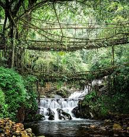
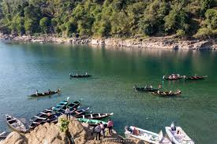
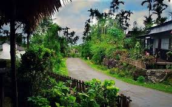
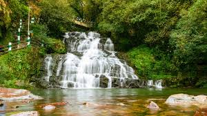

Cherrapunji

Once the wettest place on Earth, it is famous for its breathtaking landscapes, living root bridges, stunning waterfalls (like Nohkalikai Falls), and limestone caves.
Dawki-Shnongpdeng

A serene village near the Bangladesh border, famous for the Umngot River, whose crystal-clear waters allow you to see the riverbed clearly, making for incredible boating.
Mawlynnong

Often cited as 'Asia's Cleanest Village', this village offers a glimpse into local tribal life, clean surroundings, and is home to the famous living root bridges.
Shillong

The capital city, known as the 'Scotland of the East' due to its rolling hills, pleasant weather, and sights like Shillong Peak and Ward's Lake.
Laitlum Canyon

A stunning, vast canyon known for its dramatic cliffs, spectacular panoramic views of the hills and valleys below, and a great spot for trekking and photography.